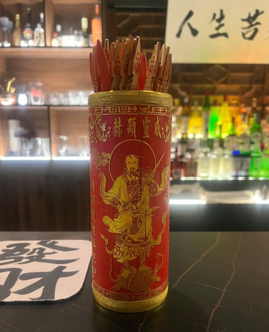
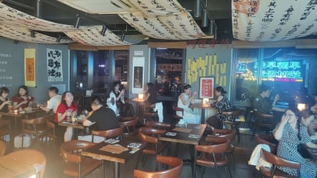
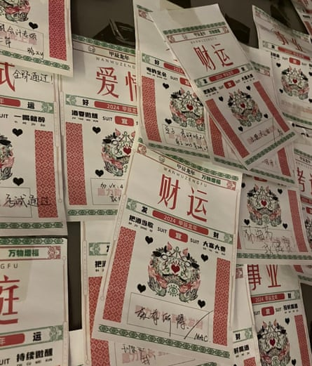

P ass my exams. Meet Mr Right. Get rich. Pinned to a board by the entrance of a dimly lit fortune telling bar in Fengtai, an urban district in the south of Beijing, handwritten notes reveal the inner worries of customers coming for cocktails with a side of spiritual salvation.
One As All is one of several fortune telling bars to have opened in Beijing, Shanghai and other Chinese cities in recent years. Hidden on the 12th floor of a commercial building, the bar serves a wide range of drinks starting at an auspicious 88 yuan (£9) (eight is considered to be lucky number in China). As well as enjoying a sundowner with a view over Beijing’s skyline, customers can consult the in-house fortune teller who specialises in qiuqian, known in English as Chinese lottery sticks, an ancient style of divination often found in Taoist temples. From a private side-room, the smell of incense burning in front of a genuine Taoist shrine wafts into the bar.
Derrex Deng, a 20-year-old student-cum-savant interprets the lottery sticks for customers. Adorned with jade jewellery, his nails manicured with sparkly black and white cats, Deng is a decidedly Gen Z fortune teller. He first felt a mystical calling when he was three or four years old and started seeing spirits, he says. “Everybody trusted me, because I was so correct in telling them the truth in a direct way”.
To divine the future with qiuqian, customers pose a question before pulling a flat wooden stick from an intricately carved cylinder. Each stick is engraved with numerals and texts, which Deng interprets.
Fortune telling sticks, orqiuqian. One consumer trends analyst puts their renewed popularity down to a growing sense of cultural confidence.Photograph: Amy Hawkins/The Guardian
His divination skills are as Gen Z as his fashion sense. Interpreting a stick drawn in response to a question about how to improve communications with an overseas relative, he suggests using more emojis in text messages.
Economic worries fuel interest in fortune telling
Worries about relationships and jobs are hardly unique to China. But as the country grapples with slowing economic growth , many young people are feeling particularly anxious about the future . So some are turning to xuanxue, or mysticism. Cece, an astrology app backed by Tencent, has been downloaded more than 100m times. The trend has been dubbed the “spiritual economy”.
“The most obvious sign of economic downturn is that, a few years ago, it felt like hardly anyone believed in metaphysics or fortune telling. But in the past two years, such beliefs have clearly become more common ,” wrote one Weibo user.
“Drinking and so-called mysticism have something in common, especially in the current environment, when everyone is under a lot of pressure,” says Ma Xu, 33, co-owner of One As All, which opened in April last year. “They both give people an outlet for their emotions or a way to vent.” As a Taoist believer himself, Ma also wanted to accrue good karma for the afterlife by opening a bar that could lift people’s spirits.
An economic downturn might seem like an odd time to open a bar. But Ma disagrees. “Now the economy is going down, people can’t buy expensive things, such as travelling abroad. But they can come and drink a glass of wine and chat all night.” Plus, he says, as a Taoist he’s not focused on making a lot of money.
“Before we used to go to temples to do qiuqian, ” says Dong Boya, 29, who works in public relations. “But this combination of drawing sticks and having a drink is interesting.”
One As All bar in Beijing. Co-owner Ma Xu said part of his reason for opening the bar was to lift people’s spirits and accrue good karma for the afterlife.Photograph: Provided by One As All bar
Dong and her friends have come to One As All armed with questions about how to find love and get rich. Neither is easy in Beijing, they say. “The way to make money fast is by breaking the law. The best ways are already written in the criminal law. Or you need to know someone,” jokes Hu Jiahui, 30, who works in artificial intelligence.
Qiuqian is one of several types of Chinese fortune telling to be enjoying a resurgence among young city-dwellers. While there is some interest in western-style divination such as tarot, it lacks the cultural resonance of Chinese traditions.
“Tarot comes from overseas, so I treat it with some suspicion,” says Ning Ning, 37. She prefers Taoist or Buddhist fortune telling.
Mysticism – a delicate place in Chinese society
Yaling Jiang, a consumer trends analyst, says the interest in Chinese-style fortune telling can be connected to a rising sense of cultural confidence. In recent months, several Chinese brands or products have gone global, from Labubus to DeepSeek . Ne Zha 2 , an animated film based on ancient mythology, broke worldwide records for its takings in the Chinese box office “The young audience is starting to connect to traditional Chinese culture,” says Jiang.
Wishes on the wall of One As All bar. ‘Drinking and so-called mysticism have something in common,’ says co-owner Ma Xu.Photograph: Amy Hawkins/The Guardian
But mysticism occupies a sensitive place in Chinese society. The Communist party is officially atheist and has repeatedly cracked down on what it describes as superstitious beliefs. Last year, state media reported that nearly 300 people had been “criminally dealt with” since 2018 for activities relating to spiritualism, with individuals sentenced to up to 17 years in prison. Still, many people maintain individual beliefs in Taoism, Buddhism and other types of spirituality, and praying to deities or ancestors for good luck and guidance is common.
Ma, the co-owner of One As All, says that he’s careful to stay on the right side of the “clear red line” of government controls. The bar doesn’t charge for qiuqian, and he also reminds customers not to be superstitious. “There’s big a difference between having a belief and being superstitious,” he says.
In China’s current economic predicament, more corporeal factors may create a space for fortune telling bars. Consumer confidence is at historic lows and the government is desperate to get people spending more , especially as the part of the economy that has traditionally propped up growth, exports, is under pressure from the US-China trade war . Any trend that gets people spending is likely to be welcomed by the authorities says Jiang. “If the final outcome is that it drives consumption, I don’t think it will cause any backlash”.
Additional research by Lillian Yang